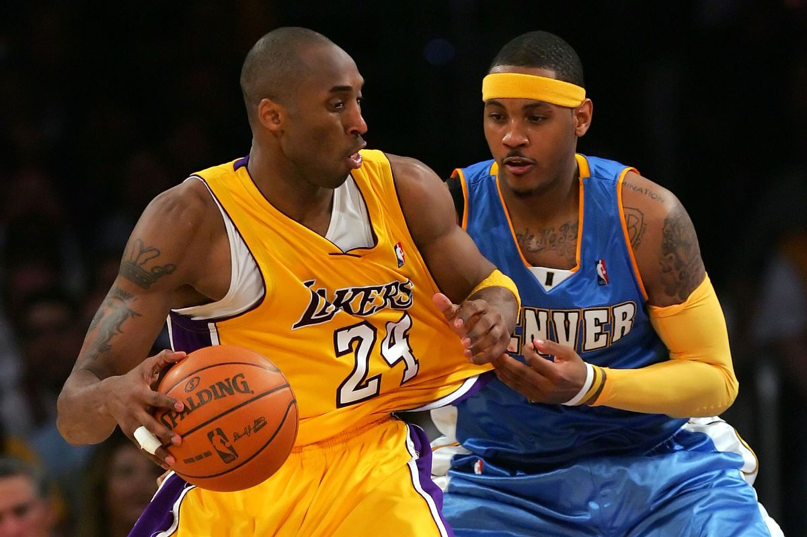
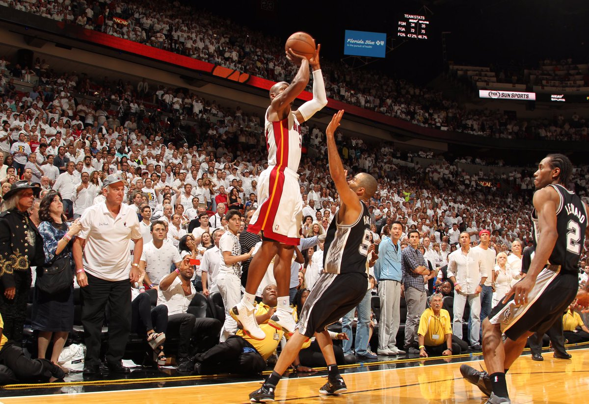

When a player has an iconic moment these days you can almost instantly see it replayed on socia media. It is how long a moment's greatness lasts that seperates each highlight from each other. Sometimes it a highlight will skyrocket in popularity if it involves two great players going head to head. A great matchup that I always enjoyed wathching was Kobe vs Melo. Check out this highlight video of them playing each other in the Western Conference Finals.
Other times it is a certain call that the anouncer makes a highilght iconic. Mike Green, who is known for his famous "BANG" calls has made great basketball moments even greater.
 The greatest players of all time have been debated over and over. Honestly, it depends on what you look for in a player and if you value winning over individual achievement. I will give you a list of ESPN's top 10 greatest basketball players first.
While I do agree on the players in the list, based off of my experiences, I would have them in a different order.
The lists made above could not have been created without the archives of statitics that are tracked throughout the years. The best places to look at players' career statistics and compare them side by side are basketball reference and the nba's website. Here are the NBA's best scorers, rebounders, playmakers, blockers, and stealers for 2019-2020.

Iconic jerseys have been around for generations. They can either go along with an iconic franchise that had an unstoppable team, or it could simply be the style of the jersey that makes it unforgettable. Jerseys that were worn in specific games have accumulated a ton of value, such as the jersey Michael Jordan wore in the famous "flu game." Click on the images below to see the value of each iconic replica jersey.